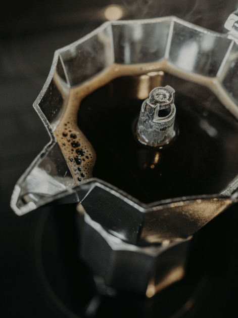

Bialetti vs Alessi
Twee Italiaanse iconen in directe vergelijking. Welk merk wint op design, kwaliteit en prijs? Een eerlijke vergelijking gebaseerd op onze uitgebreide tests.

Bialetti
De oorspronkelijke uitvinder

Alessi
De design innovator